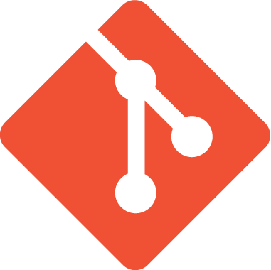

La transición de diseñador gráfico a diseñador web Full Stack requiere adquirir conocimientos y habilidades adicionales en el ámbito del desarrollo web y la programación. Este proceso implica combinar las habilidades de diseño visual con la capacidad de implementar técnicamente un sitio web. Desde el dominio de herramientas de diseño hasta el aprendizaje de lenguajes de marcado como HTML y estilos como CSS, un diseñador web Full Stack debe comprender también conceptos de interactividad y programación web. Además, es crucial considerar la importancia de la accesibilidad web, la experiencia de usuario y la optimización del diseño para la conversión.
¿Qué es un diseñador web full stack?
n diseñador web Full Stack es un profesional versátil que combina habilidades en diseño visual y experiencia de usuario (UX/UI) con conocimientos en desarrollo web. Puede encargarse de todas las etapas de creación de un sitio web, desde el diseño inicial hasta la implementación final. Esto incluye la planificación, el diseño de interfaces, la maquetación y el desarrollo del lado del cliente.
¿Qué necesito saber?
- Diseño visual y UX/UI:
- Debes tener una sólida comprensión de los principios del diseño visual y la experiencia de usuario (UX) y el diseño de interfaces de usuario (UI).
HTML y CSS:- Necesitas conocer HTML para crear la estructura básica de las páginas web y CSS para estilizarlas.

Diseño responsive:- Es importante comprender cómo diseñar y desarrollar sitios web que se adapten a diferentes tamaños de pantalla y dispositivos.

JavaScript:- Aprender JavaScript te permitirá agregar interactividad y funcionalidades avanzadas a tus diseños web.

Servidores y hosting:- Comprender cómo funcionan los servidores y cómo desplegar tus sitios web en un entorno de hosting es esencial.
Versionado y control de código:- Utilizar sistemas de control de versiones como Git te permitirá gestionar y colaborar en proyectos de manera eficiente.

Conoce otras habilidades para ser full stack
Diseñadores Exitosos
En esta sección, proporciona una lista de diseñadores gráficos exitosos que se han convertido en diseñadores web Full Stack. Puedes presentar esta lista en forma de tabla.
| Nombre | Descripción | Redes sociales | Enlace a su trabajo |
|---|---|---|---|
| Andy Clarke | Jefe de Creatividad en Stuff & Nonsense. Diseñador y consultor. Autor de varios libros sobre diseño y desarrollo web | @Malarkey |
Su trabajo |
| David Carson | Famoso por su enfoque experimental y vanguardista, pionero en el uso de tipografías no convencionales. Su estilo audaz y disruptivo ha dejado una marca distintiva. |
davidcarsondesigner |
--- |
| Adam Jesberger | Actualmente trabaja en los conceptos y diseños para plataformas Web y experiencia móvil de marcas globales. | Adam Jesberger |
Su trabajo |